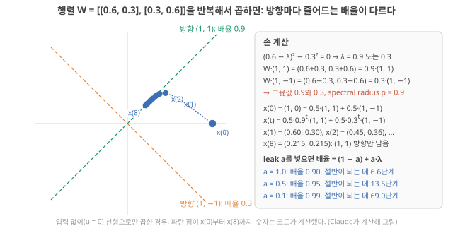

D9. 왜 memory가 필요하고, fading memory란 무엇인가?
Phase 2 · RC는 왜, 어떻게 작동하는가 · 10월 31일 (토)
답에 들어가야 할 것 — echo state property, 전류가 천천히 감소하는 것이 왜 계산에 도움이 되는지의 인과
기본 경로: ① 사전 테스트(권장) → ② 학습자료(구간마다 잠깐 점검까지) → ③ 백지 회상 → ④ 가르치듯 내 답. ⓪·⑤와 접힌 '심화'·'추가 연습'은 선택입니다. 한 번에 끝낼 필요 없이 구간 단위로 나눠 읽어도 되고, 다시 열면 '지난번 읽던 곳' 링크가 뜹니다.
① 사전 테스트와 먼저 만들어 보기
아직 배우지 않은 내용을 먼저 풀어 봅니다. 많이 틀리는 것이 정상이고, 그게 목적입니다. 먼저 답해 본 문제는 읽을 때 눈에 들어오고 더 오래 남습니다. 문제마다 정답만 보이고, 이유는 학습자료와 ⑤ 다시 풀기에서 봅니다. 다 풀면 학습자료가 열립니다. 건너뛰려면 학습자료 위의 '그냥 읽기'를 누르세요(권장 단계일 뿐 필수는 아닙니다).
② 학습자료
D8에서 reservoir의 상태가 "지난 입력들의 고정된 비선형 함수"라는 것을 숫자로 보았습니다. 그리고 그 상태가 과거를 전부 담지는 못하고 "최근 입력의 일부"만 읽을 수 있게 남긴다고 했습니다. 오늘은 그 "최근"과 "일부"를 정확히 합니다. 이온 소자 연구자에게 오늘의 질문은 특히 가깝습니다. 내 소자의 전류가 펄스 뒤에 천천히 줄어드는 것이 왜 계산에 쓸모가 있다고들 하는지, 그 말이 언제 참이고 언제 거짓인지가 오늘의 끝에 놓입니다.
- 어떤 계산에 기억이 필요한가? 기억 없이 하면 무엇이 불가능한가?
- fading memory란 무엇인가? 줄어드는 비율 하나(0.5, 0.9, 1.1)가 무엇을 바꾸나?
- echo state property란 무엇인가? 왜 "처음 상태를 잊는 것"이 필요한가?
- spectral radius와 leak rate는 무엇을 조절하나? (2×2 표로 손 계산)
- 천천히 감소하는 전류는 어떤 인과 사슬을 거쳐 계산에 도움이 되나? 그 사슬은 어디서 끊기나?
1. 기억이 필요한 계산
이 구간을 읽고 나면 "기억 없는 장치는 지금 입력이 같으면 늘 같은 답을 낸다"는 한 문장으로, 과거가 필요한 과제를 기억 없이 풀 수 없는 이유를 보이고, 기억을 얻는 두 가지 방법(저장해 두기, 상태에 흔적 남기기)을 구별할 수 있다.
기억이 없는 장치. 출력이 지금 입력 하나로만 정해지는 장치를 생각합니다. \(y(t) = g(u(t))\). 예를 들어 전압을 넣으면 그 순간의 전류가 나오는 이상적인 저항이 그렇습니다. 이런 장치는 아무리 복잡한 곡선 \(g\)를 가져도 "지금 입력이 같으면 답도 같다"는 성질에서 벗어나지 못합니다.
작은 예. 입력이 0과 1로 오는 신호에서 "한 단계 전에 1이 왔었나?"라는 질문을 합시다. 두 이력 "1, 0"과 "0, 0"을 비교합니다. 둘 다 지금 입력은 0입니다. 기억 없는 장치는 두 경우에 같은 출력 \(g(0)\)을 냅니다. 그런데 정답은 앞은 "예", 뒤는 "아니오"입니다. 어떤 \(g\)를 골라도 둘 중 하나는 틀립니다. 과거가 필요한 질문은 기억 없이 풀 수 없습니다. 증명은 이 한 줄이 전부입니다.

현실의 과제는 대부분 이렇다. 심전도에서 부정맥은 박동 하나의 모양뿐 아니라 앞 박동과의 간격으로 판단합니다. 말소리는 "ㄱ 다음에 ㅏ"처럼 순서가 뜻을 바꿉니다. 손동작 "삼각형"과 "역삼각형"은 같은 세 방향의 움직임을 다른 순서로 한 것입니다. D8 1구간의 시계열 과제들은 거의 다 지금 값만으로는 답이 정해지지 않습니다.
기억을 얻는 두 방법. 해석
- 저장해 두기: 지난 입력 \(u(t-1), u(t-2), \dots, u(t-k)\)를 메모리에 그대로 적어 두고 함께 본다(D12의 "지연 탭" 기준선. 기준선은 소자 없이도 얻을 수 있는 성능, D6 기초). 정확하지만, 길이 \(k\)만큼의 저장 공간과 그것을 옮기는 비용이 든다(D2의 데이터 이동).
- 상태에 흔적 남기기: 입력이 상태를 바꾸고, 그 변화가 천천히 사라지게 한다. 저장 공간이 따로 없어도 지금 상태에 과거의 흔적이 섞여 있다(D8의 \(x(t) = F(u(t-1), u(t-2), \dots)\)).
reservoir와 물리 소자는 둘째 방법입니다. Liang은 RC가 순환 연결 때문에 지금과 과거의 뉴런 동역학 사이에 의존성이 생기고, 이것을 단기 기억(short-term memory) 또는 fading memory라고 부르며, 이 기억은 과거 정보를 시간 단계를 넘어 reservoir 상태에 남게 하고 memory capacity(MC)라는 측정법으로 정량화된다고 씁니다. Liang 2024, p.194 (MC는 지금 상태만 보고 1단계 전, 2단계 전, … 의 입력을 각각 얼마나 되살릴 수 있는지를 0~1 점수로 재어 모두 더한 값입니다. 클수록 지난 입력을 더 많이, 더 멀리까지 담고 있다는 뜻입니다. 5구간의 '고리 ②'에서 숫자로 한 번 보고, 정식 설명은 D11–D12.) 그리고 물리 RC에서 MC를 키우면 보조 메모리를 쓰지 않아도 되어 시스템 비용을 줄일 수 있다고 씁니다. Liang 2024, p.200 반대로 병렬로 놓은 동적 소자들은 MC가 "누적되지 않고 대부분 겹쳐서" 낮은 수준에 머물고, 이것을 버퍼에 중간 상태를 저장해 보완하면 외부 메모리라는 비용이 든다고 적습니다. Liang 2024, p.196 두 방법이 서로의 대안이라는 뜻입니다. (MC의 정확한 측정법은 D12에서 직접 돌려 봅니다.)
- 기억 없는 장치 \(y = g(u(t))\)는 지금 입력이 같으면 늘 같은 답 → "1, 0"과 "0, 0"을 못 가른다. 과거가 필요한 과제는 기억 없이 못 푼다.
- 기억을 얻는 두 방법: 지난 입력을 저장해 두기(지연 탭, 메모리 비용) vs 상태에 흔적 남기기(reservoir, 물리 소자).
- RC의 단기/fading memory는 MC로 잰다 Liang 2024, p.194. MC가 크면 보조 메모리를 줄일 수 있다 Liang 2024, p.200.
2. fading memory: 과거의 영향이 줄어드는 것
이 구간을 읽고 나면 노드 하나의 상태가 입력 펄스 뒤에 \(d, d^2, d^3, \dots\)으로 줄어드는 것을 \(d\) = 0.5, 0.9, 1.1로 직접 계산하고, \(d\)를 시간상수 \(\tau\)와 실제 시간으로 바꿀 수 있으며, 이온 소자의 이완과 '감소하는 전류'를 식의 \(x\), \(u\), \(d\)로 옮기고, \(\tau\)와 retention이 다른 말인 이유를 말할 수 있다.
D7 1구간에서 숫자 하나짜리 RNN(상태를 다음 시간 단계로 넘기는 신경망) \(h(t+1) = \tanh(0.5\,h(t) + u(t))\)에 1을 한 번 넣으면 상태가 0.762 → 0.363 → 0.180으로 줄었습니다. 그리고 D7은 "줄어드는 속도는 0.5가 정한다"고 했습니다. 오늘은 \(\tanh\)를 잠시 빼고, 줄어드는 비율 \(d\)만 남긴 가장 단순한 모형으로 그 말을 정확히 합니다.
fading memory: 과거 입력의 영향이 줄어드는 것
모형. 노드 하나, 상태 \(x\), 입력 \(u\), 줄어드는 비율 \(d\)(무차원, 0 이상).
\[ x(t+1) = d\cdot x(t) + u(t) \]
- 뜻: 다음 상태 = (지금 상태의 \(d\)배) + (지금 입력). 매 단계 과거의 몫이 \(d\)배가 된다.
- 계산 순서: 지금 상태에 \(d\)를 곱한다 → 지금 입력을 더한다 → 다음 상태.
손 계산. \(x(0) = 0\), 입력은 \(t = 0\)에 1, 그 뒤로는 0.
- \(d = 0.5\): \(x(1) = 1\), \(x(2) = 0.5\), \(x(3) = 0.25\), \(x(4) = 0.125\). 한 단계마다 절반. 10단계 뒤에는 0.001.
- \(d = 0.9\): \(1, 0.9, 0.81, 0.729, \dots\) 10단계 뒤에도 0.349가 남는다.
- \(d = 1.1\): \(1, 1.1, 1.21, 1.331, \dots\) 줄지 않고 커진다. 10단계 뒤 2.59, 15단계 뒤 4.18.
일반적으로 \(k\)단계 전 입력이 지금 상태에 남긴 몫은 \(d^k\)입니다. 그래서 지금 상태는
\[ x(t) = u(t-1) + d\,u(t-2) + d^2 u(t-3) + \cdots \]
처럼 지난 입력들의 가중합이고, 가중치가 과거로 갈수록 \(d\)배씩 줄어듭니다. 이것이 fading memory(흐려지는 기억)입니다. \(d < 1\)이면 오래된 입력일수록 영향이 작아지고, 결국 지금 상태는 최근 입력들이 주로 정합니다. D8의 "읽을 수 있게 남는 것은 최근 입력의 일부"가 바로 이 뜻입니다.
이름의 두 얼굴. 문헌은 같은 성질을 두 방향에서 말합니다. Liang은 "과거 정보가 상태에 남는다"(단기 기억) 쪽에서 Liang 2024, p.194, Stepney는 "먼 과거의 세부가 지금 상태를 좌우하지 않는다" 쪽에서 Stepney 2024, p.668 씁니다. 둘 다 맞고, 한 성질의 앞뒷면입니다. 최근은 남고 먼 과거는 흐려진다.

\(d\) = 1.1은 왜 나쁜가. 기억이 오래가니 좋을 것 같지만 둘 다 문제입니다. 선형이면 과거가 계속 커져 결국 지금 입력의 몫(1)이 과거의 몫(수십, 수백)에 묻힙니다. \(\tanh\)가 있으면 터지지는 않지만, 한 번 1이 들어온 뒤 상태가 0.50 근처에 영원히 머뭅니다. 그 뒤로 무엇이 들어와도 "언젠가 1이 왔었다"는 사실만 남고, 언제·몇 번이었는지는 구별되지 않습니다. 저장 소자(비휘발성 메모리)로는 좋은 성질이지만, 시계열을 처리하는 reservoir로는 나쁜 성질입니다. D1 4구간의 "같은 현상, 정반대의 역할: 휘발성과 비휘발성"(D1 4구간)이 여기서 숫자로 보입니다. 해석
\(d\)를 시간으로 바꾸기. D8 1구간에서 시간 단계 \(t\)는 번호이고, 실제 시각은 \(t\) × 샘플링 주기 \(\Delta t\)라고 했습니다(D8 기초: 시계열·샘플링). 물리 소자의 응답이 지수함수 \(e^{-t/\tau}\)로 줄어든다고 합시다(\(\tau\)는 시간상수, 단위 s. 화공의 1차 반응이나 1차 이완에서 평형과의 농도 차이가 \(e^{-t/\tau}\)로 줄어드는 것과 같은 꼴입니다). 어느 시각 \(t\)의 값과 \(\Delta t\) 뒤의 값의 비는 \(e^{-(t+\Delta t)/\tau} \div e^{-t/\tau} = e^{-\Delta t/\tau}\)로, 언제 재든 같습니다. 이것이 지수함수의 성질이고, 그래서 한 단계(\(\Delta t\)) 동안 남는 비율이 숫자 하나로 정해집니다.
\[ d = e^{-\Delta t/\tau}, \qquad \tau = -\frac{\Delta t}{\ln d} \]
입니다(둘째 식은 첫 식의 양변에 자연로그 \(\ln\)을 취해 \(\tau\)에 대해 푼 것). 예: 250 Hz(\(\Delta t\) = 4 ms)로 넣을 때 \(d\) = 0.9라면 \(\tau = -4/\ln 0.9 = 38\) ms. 같은 소자(\(\tau\) = 38 ms)에 10 Hz(\(\Delta t\) = 100 ms)로 넣으면 \(d = e^{-100/38} = 0.07\)로, 다음 입력이 올 때 흔적이 7%만 남습니다. 같은 소자라도 입력 속도에 따라 \(d\)가 달라집니다. 그래서 "이 소자는 기억이 길다/짧다"는 말은 입력 간격을 함께 말해야 뜻이 있습니다. 상태가 절반이 되는 단계 수 \(n\)은 \(d^n = 0.5\)의 양변에 로그를 취해 풀면 \(n = \ln 0.5/\ln d\)로, \(d\) = 0.5면 1단계, \(d\) = 0.9면 6.6단계입니다.
직접 바꿔 보기: τ와 입력 간격 (3–5분)
소자의 이완 시간 τ와 입력을 넣는 간격 Δt를 따로 바꿔, 다음 입력 때 앞 입력의 흔적이 얼마나 남는지(d) 봅니다. 먼저 예상을 고른 뒤 입력 간격만 바꿔 보세요.
교육용 모형입니다. 흔적이 정확히 지수함수 e−t/τ로 준다고 가정합니다. 실제 이온 소자는 여러 시간척도가 섞이거나 지수 모양이 아닐 수 있습니다(D13, D21). τ는 5–500 ms, Δt는 1–200 ms에서 고릅니다.
정적 예제. d = e^(−Δt/τ)
| τ | Δt | d (다음 입력 때 남는 몫) | 5번째 입력 때 |
|---|---|---|---|
| 38 ms | 4 ms | 0.90 | 59% |
| 38 ms | 100 ms | 0.072 | 0.0002% |
| 100 ms | 100 ms | 0.37 | 0.67% |
무슨 일이 있었나. 같은 소자(τ = 38 ms)라도 입력을 4 ms마다 넣으면 흔적이 90% 남고, 100 ms마다 넣으면 7%만 남습니다. 기억의 길이는 τ 하나가 아니라 Δt/τ의 비로 정해집니다. 그래서 "τ가 길면 기억이 좋다"가 아니라 "과제의 입력 간격에 비해 τ가 알맞은가"를 물어야 합니다. 이 실습의 숫자는 지수 감쇠 모형에 대한 Claude 계산이고, 내 소자의 d를 알려면 실제 펄스 응답을 재야 합니다.
- Δt = τ이면 다음 입력 때 흔적은?
답
e^(−1) ≈ 37%. - d = 0.5이면 3번 전 입력의 흔적은?
답
0.5³ = 12.5%.
"시간상수 \(\tau\)가 길면 retention이 길고, 그러면 기억이 좋다" — \(\tau\)는 응답을 지수함수로 맞췄을 때의 모형 매개변수이고, retention(유지 시간)은 "어떤 값이 허용 오차 안에 얼마 동안 남나"를 정의·허용오차·측정 기간을 정해 잰 지표입니다. 둘은 다른 양입니다. 그리고 계산에 필요한 것은 둘 중 어느 것도 아니라, 과제의 시간척도에 맞는 흐려짐입니다. 그림 1의 \(d\) = 1.1처럼 너무 오래가는 기억은 reservoir에서는 해롭고, 5구간에서 보듯 "느리게 잊는 것"과 "많이 기억하는 것"도 다른 말입니다. retention과 memory capacity의 차이는 D13에서 다룹니다.
읽는 법. 아래 원문 그림은 Liang 리뷰가 물리 노드를 추상화한 모형(a)과 여러 소자 예(b–e)입니다. 먼저 (a)에서 상자 \(f\)와 삼각형 \(d\), 그리고 \(Z^{-1}\)(한 단계 지연)을 찾으세요. 오늘의 \(x(t+1) = d\,x(t) + u(t)\)에서 \(d\)를 곱하고 한 단계 미루는 고리가 그 왼쪽 고리입니다. 그다음 (e)의 아래 그래프에서 전압 펄스(보라)가 끝난 뒤 전도도(파랑)가 바로 떨어지지 않고 천천히 내려오는 모양, 그리고 두 번째 펄스가 첫 번째 펄스의 흔적 위에서 시작하는 모양을 보세요.

Liang은 물리 노드가 대체로 비선형성과 동역학이라는 두 특성을 가지며, 물리 RC는 피드포워드 신경망과 달리 단기 기억을 가진 동역학계이고 그 단기 기억은 주로 물리 노드에서 나온다고 씁니다. Liang 2024, p.197 이온 소자의 이완(D20–D21의 전기이중층 충전, 농도 분극 등)이 바로 이 \(d\)의 후보입니다. 해석
이온 소자의 말을 식의 기호로: 이완, 감소하는 전류, \(d\)
논문의 "펄스 뒤 전류가 천천히 감소한다(이완한다)"와 오늘의 식 \(x(t+1) = d\,x(t) + u(t)\)는 같은 일을 다른 말로 적은 것입니다. 쓰기 펄스가 채널 전도도 \(g\)를 올리고, 소자를 거의 건드리지 않는 작은 읽기 전압 \(V_{read}\)에서 전류를 읽는 이온 소자(예: 전해질 게이트 트랜지스터)를 놓고 무엇이 무엇에 대응하는지 맞춥니다. 숫자는 위 실습의 첫 줄(\(\tau\) = 38 ms, \(\Delta t\) = 4 ms)과 같고, 대응은 설명을 위한 교육용 모형입니다. 해석
| 식의 기호 | 이온 소자에서 무엇인가 | 예시 숫자 |
|---|---|---|
| 시간 단계 \(t\) | 쓰기 펄스가 올 수 있는 차례의 번호 | \(\Delta t\) = 4 ms마다 한 차례 |
| 입력 \(u(t)\) | 그 차례에 쓰기 펄스가 왔나(1), 안 왔나(0) | 1, 1, 0, 0, … |
| 상태 \(x\) | 쉬는 값보다 늘어난 전도도 \(g - g_{rest}\)를 펄스 하나가 올리는 양 \(\Delta g\)로 나눈 값. 물리적으로는 펄스가 계면 근처에 남긴 여분의 이온이 만든 여분의 전도도 | 펄스 하나 직후 \(x\) = 1 |
| \(+\,u(t)\) | 펄스가 올 때마다, 그때 남아 있던 여분 위에 \(\Delta g\)가 더해진다 | \(\Delta g\) = 2 µS |
| \(d\) | 다음 차례까지 여분이 남는 몫 \(e^{-\Delta t/\tau}\) | 0.90 |
| \(\tau\) | 이완 시간상수: 여분이 \(1/e\)(약 37%)로 줄어드는 시간. 소자(재료·구조)가 정한다 | 38 ms |
| 읽는 값 | 전류 \(I = g\,V_{read} = (g_{rest} + \Delta g\,x)\,V_{read}\). "감소하는 전류"는 \(I - I_{rest} = \Delta g\,V_{read}\,x\), 곧 \(x\)가 줄어드는 것 | \(V_{read}\) = 0.1 V면 \(x\) = 1일 때 0.2 µA 더 흐름 |

단계 1 — 쉬는 상태. 펄스가 오기 전 전도도는 쉬는 값 \(g_{rest}\) = 10 µS이고 여분이 없으니 \(x\) = 0. 읽기 전압 0.1 V에서 전류는 10 µS × 0.1 V = 1.0 µA.
단계 2 — 첫 펄스(\(u\) = 1). 펄스가 계면 쪽으로 이온을 밀어 넣어 전도도가 \(\Delta g\) = 2 µS 오릅니다. \(g\) = 12 µS, \(x\) = 2 ÷ 2 = 1, 전류 1.2 µA. 식으로는 \(x = d \times 0 + 1 = 1\).
단계 3 — 4 ms 기다림(이완). 펄스가 끝나면 여분의 이온이 제자리로 돌아가며 여분이 \(e^{-4/38}\) = 0.90배가 됩니다. 2 µS 중 1.8 µS가 남아 \(x\) = 0.9. 이 0.9가 식의 \(d\)입니다. 소자의 이완(물리)이 식에서는 "지금 상태에 \(d\)를 곱한다"(수학)가 됩니다.
단계 4 — 둘째 펄스(\(u\) = 1). 남은 흔적 위에 다시 2 µS가 더해져 \(x = 0.9 + 1 = 1.9\), \(g\) = 13.8 µS, 전류 1.38 µA. 식으로는 \(x = d \times 1 + 1\). 첫 펄스가 없었다면 둘째 펄스 뒤에는 \(x\) = 1, 전류 1.2 µA였을 것입니다. 같은 둘째 펄스인데 지난 이력에 따라 지금 전류가 다릅니다. D6의 PPF(펄스 두 개를 연달아 주면 둘째 응답이 커지는 현상)가 이것의 가장 작은 판이고, 5구간 인과 사슬의 고리 ③입니다.
단계 5 — 펄스 없이 계속. 4 ms마다 0.90배: \(x\) = 1.71, 1.54, 1.39, 1.25, 전류 1.34, 1.31, 1.28, 1.25 µA. 논문이 말하는 "천천히 감소하는 전류"가 식에서는 "\(u\) = 0인 동안 \(x\)가 매 단계 \(d\)배가 되는 것"이고, 지금 전류에서 쉬는 전류(1.0 µA)를 뺀 몫이 \(x\)에 비례합니다.
대응이 깨지는 곳. 이 대응은 세 가정 위에 있습니다. (1) 펄스 하나가 올리는 양 \(\Delta g\)가 지금 상태와 무관하다: 실제로는 이온이 많이 쌓이면 덜 올라 포화될 수 있고, 이것이 비선형 함수(위 원문 그림 a의 \(f\), D7의 \(\tanh\))가 들어갈 자리입니다. (2) 이완이 시간상수 하나짜리 지수함수다: 실제로는 전기이중층 충전, 이온 확산, 전기화학 도핑처럼 빠르기가 다른 과정이 섞여 \(\tau\)가 여럿이거나 지수 모양이 아닐 수 있고(D13, D21), 그러면 \(d\)도 숫자 하나로 정해지지 않습니다. (3) 쉬는 값 \(g_{rest}\)가 그대로다: 쉬는 값이 서서히 움직이면(드리프트) 그 변화가 기억처럼 보일 수 있습니다(3구간 끝). 해석
\(d\) = 0.9인 노드에 1을 한 번 넣었습니다. 3단계 뒤 상태는 얼마일까요? 첫 문제는 본문 \(d\) = 0.5의 확인, 둘째는 빈칸 채우기, 셋째는 \(d\) = 0.8의 새 문제입니다.
- fading memory: \(x(t+1) = d\,x(t) + u(t)\)에서 \(k\)단계 전 입력의 몫은 \(d^k\). \(d < 1\)이면 최근 입력이 상태를 주로 정한다.
- \(d\) = 0.5: 1, 0.5, 0.25 … / 0.9: 1, 0.9, 0.81 …(11단계에 0.349) / 1.1: 계속 커짐. \(\tanh\)를 씌운 1.1은 0.50에 영원히 머문다(잊지 못함).
- \(d = e^{-\Delta t/\tau}\): 같은 소자도 입력 간격에 따라 \(d\)가 다르다. 4 ms 간격에 \(d\) = 0.9 ↔︎ \(\tau\) = 38 ms.
- 이온 소자로 읽으면 \(x\) = 늘어난 전도도(펄스 하나의 \(\Delta g\) 단위), \(u\) = 쓰기 펄스, \(d\) = 다음 펄스 때까지 남는 몫. '천천히 감소하는 전류'는 \(u\) = 0인 동안 \(x\)가 \(d\)배씩 줄어드는 것이다(그림 2).
- 단기 기억은 주로 물리 노드의 동역학에서 나온다 Liang 2024, p.197. \(\tau\) ≠ retention(D13).
3. echo state property: 처음 상태를 잊는 것
이 구간을 읽고 나면 echo state property를 "출발점만 다른 두 상태가 같은 입력을 받으면 하나로 모인다"로 정의하고, 노드 하나(\(d\) = 0.5, 0.9, 1.1)와 노드 200개(ρ = 0.3, 0.9, 1.2, 2.0)의 숫자로 언제 성립하고 언제 깨지는지 말할 수 있다.
fading memory는 "과거 입력의 영향이 줄어든다"였습니다. 그런데 과거에는 입력만 있는 것이 아닙니다. 처음 상태도 있습니다. 소자를 켰을 때의 상태, 지난번 실험이 남긴 상태. 그것까지 잊어야 합니다.
echo state property: 초기 상태를 잊고 입력만으로 상태가 정해지는 것
왜 필요한가. readout은 "이런 상태면 이런 답"을 배웁니다. 그런데 같은 입력 이력을 넣었는데 처음 상태가 다르다는 이유로 다른 상태가 나온다면, 어제 학습한 readout이 오늘은 틀립니다. 실험을 다시 해도 같은 결과가 나오지 않습니다. 상태가 "입력의 메아리(echo)"여야 readout이 쓸 수 있습니다.
정의(이 교재의 뜻). 같은 reservoir 두 벌을 서로 다른 처음 상태에서 출발시키고, 같은 입력을 넣었을 때 두 상태의 차이가 시간이 지나며 0으로 줄어들면, 그 reservoir는 echo state property(ESP)를 가진다고 말합니다. 그러면 충분히 시간이 지난 뒤의 상태는 처음 상태와 무관하게 입력 이력만으로 정해집니다.
원문. Stepney는 \(W\)를 정규화(크기를 일정하게 맞추는 것)하는 이유가 ESP를 보장하기 위해서라며, "ESP 또는 fading memory 성질은 reservoir의 먼 훗날 상태가 이른 시점의 세부에 의존하지 않게 한다. 즉 초기 조건에 민감하게 의존하지 않는다"고 씁니다. Stepney 2024, p.668 Liang도 ESN(echo state network, D7–D8) 이론에 따라 \(W_{res}\)를 spectral radius(행렬이 상태를 반복해서 몇 배로 줄이거나 늘리는지를 나타내는 숫자, 4구간에서 손 계산)에 맞춰 적절히 조절해야 바람직한 ESP가 생긴다고 씁니다. Liang 2024, p.194
작은 숫자로: 두 궤적(선형, 노드 하나). \(x(t+1) = 0.5\,x(t) + u(t)\)를 두 벌 만듭니다. 벌 A는 +0.8에서, 벌 B는 −0.8에서 출발하고(소자로 치면 직전 실험이 남긴 상태가 다른 두 경우), 둘 다에 같은 입력 1, 0, 1, 1, 0을 넣습니다. 계산은 2구간과 같습니다(지금 상태 × 0.5 + 지금 입력).
| 시간 단계 \(t\) | 0 | 1 | 2 | 3 | 4 | 5 |
|---|---|---|---|---|---|---|
| 그 단계에 넣는 입력 \(u(t)\) | 1 | 0 | 1 | 1 | 0 | |
| 벌 A의 상태 \(x(t)\) | 0.8 | 1.4 | 0.7 | 1.35 | 1.675 | 0.838 |
| 벌 B의 상태 \(x(t)\) | −0.8 | 0.6 | 0.3 | 1.15 | 1.575 | 0.788 |
| 차이 A − B | 1.6 | 0.8 | 0.4 | 0.2 | 0.1 | 0.05 |
예: 벌 A의 \(x(1) = 0.5 \times 0.8 + 1 = 1.4\), 벌 B의 \(x(1) = 0.5 \times (-0.8) + 1 = 0.6\). 처음에는 부호부터 달랐던 두 상태가 5단계 뒤에는 0.84와 0.79로 거의 같아지고, 그사이 둘 다 입력 1을 받으면 오르고 0을 받으면 절반으로 내려가는 같은 모양을 따라갑니다. 이것이 "처음 상태를 잊는다"의 실제 모습입니다. 왜 그런지는 차이만 따로 보면 분명합니다. 같은 입력이 두 벌에 똑같이 더해지므로 A의 식에서 B의 식을 빼면 입력이 지워지고 차이(\(t\)+1) = \(d\) × 차이(\(t\))만 남습니다. 그래서 차이는 입력과 상관없이 매 단계 \(d\)배가 됩니다. \(d\) = 0.9면 1.6 → 1.44 → 1.30 → 1.17로 천천히 줄지만 결국 0으로 갑니다. \(d\) = 1.1이면 1.6 → 1.76 → 1.94로 벌어집니다. 선형 노드에서는 "\(d < 1\) ⇔ ESP"입니다.
비선형 노드에서는 이야기가 조금 다르다. \(\tanh\)가 있으면 상태가 −1과 1 사이에 갇히므로 차이가 터지지는 않습니다. 그 대신 그림 3처럼 두 갈래로 나뉜 채 머무를 수 있습니다.

마지막 칸이 중요한 단서입니다. Stepney는 Jaeger(2007)를 인용해, spectral radius가 1보다 큰 가중치 행렬은 그 자체로는 ESP를 갖지 않지만 입력이 충분히 크면 여전히 ESP를 가질 수 있고, "입력 진폭이 클수록 spectral radius가 1보다 더 커도 ESP를 얻을 수 있다"고 씁니다. 그래서 고르는 ρ 값이 적절한 입력 크기에 영향을 준다. Stepney 2024, p.668 ESP는 reservoir만의 성질이 아니라 reservoir와 입력의 조합의 성질이라는 뜻입니다. 해석
노드 200개에서. D12에서 돌릴 tools/esn.py는 노드 200개짜리 reservoir 두 벌을 서로 다른 난수 상태에서 출발시키고 같은 입력을 넣어 둘 사이의 거리를 잽니다(4구간의 spectral radius ρ를 바꿔 가며). 상태가 숫자 200개의 목록이라 차이도 200개이므로, 이것을 숫자 하나로 줄인 것이 거리입니다. 칸마다 두 값의 차이를 제곱해 모두 더한 뒤 제곱근을 취합니다(평면 위 두 점의 거리를 피타고라스 정리로 구하는 것을 200칸으로 늘린 것, 유클리드 거리). 칸이 두 개이고 두 상태가 (0.8, 0.1)과 (−0.4, 0.6)이면 차이는 (1.2, −0.5), 거리는 \(\sqrt{1.2^2 + 0.5^2} = 1.3\)입니다. 거리가 0이면 두 상태가 완전히 같습니다. 아래 그림의 세로축은 로그 눈금이라(가로 격자 한 칸이 1만 배, D1 기초: 로그 축) 아주 작은 거리까지 한 그림에 보입니다.

실험에서 무엇을 뜻하나. 시뮬레이션에서도 실험에서도, 처음 몇 단계는 처음 상태의 영향이 남아 있으므로 학습에 쓰지 않고 버립니다. 이것을 washout(씻어 내기)이라 하고, tools/esn.py는 처음 100단계를 버립니다. ESP가 있으면 washout은 "흔적이 충분히 사라질 만큼"이면 되고, ESP가 없으면 아무리 길게 버려도 처음 상태의 영향이 사라지지 않습니다(그림 4의 ρ = 1.2). 물리 소자로 말하면, 매번 같은 리셋 절차 없이도 같은 입력에 같은 상태를 내는가의 문제입니다. Singh 2026은 반복성 확인의 첫 단계로 "같은 입력에 대해 소자 응답이 반복되는가, 측정 창 동안 느린 비정상 드리프트가 있는가"를 먼저 확인하라고 하고, 드리프트는 기억처럼 보일 수 있다고 경고합니다. Singh 2026, p.5
선형 노드 두 벌의 차이가 1.6에서 시작합니다. \(d\) = 0.9면 2단계 뒤 차이는 얼마일까요?
- ESP: 출발점만 다른 두 상태가 같은 입력을 받으면 하나로 모인다 → 상태가 입력 이력만으로 정해진다. 먼 훗날 상태가 이른 시점 세부에 의존하지 않는다 Stepney 2024, p.668.
- 선형 노드: 차이가 매 단계 \(d\)배 → \(d < 1\)이면 ESP. \(\tanh\) 노드 \(d\) = 1.1은 작은 입력에서 두 갈래로 남고(0.96), 큰 입력에서 다시 모인다 Stepney 2024, p.668.
- 노드 200개: ρ = 0.3, 0.9는 거리가 사라지고, 1.2, 2.0은 1,000단계 뒤에도 5.3, 14(Claude의 시뮬레이션).
- washout은 ESP가 있을 때만 의미가 있다. 실험에서는 반복성과 드리프트를 먼저 확인한다 Singh 2026, p.5.
4. spectral radius와 leak rate: 행렬이 상태를 몇 배로 줄이나
이 구간을 읽고 나면 대각선 밖에도 숫자가 있는 2×2 행렬의 고윳값(0.9, 0.3)과 그 방향 (1, 1), (1, −1)을 두 식에서 손으로 구하고, spectral radius가 "가장 느리게 줄어드는 방향의 배율"이라는 것과 leak rate \(a\)가 배율을 \((1-a) + a\lambda\)로 바꾸는 것을 계산할 수 있다.
노드 하나에서는 \(d\)라는 숫자 하나가 기억의 길이를 정했습니다. 노드가 여럿이면 \(d\) 자리에 표 \(W\)가 들어갑니다(D8의 \(x(t+1) = \tanh(W x(t) + \dots)\)). 표는 숫자가 아니니 "몇 배로 줄이나"를 바로 말할 수 없습니다.
D7 2구간에서는 대각선에만 숫자가 있는 표(행 1 = (0.5, 0), 행 2 = (0, 0.9))를 보았습니다. 이 표는 칸마다 따로 곱하기만 하므로 (1, 0)은 방향 그대로 0.5배, (0, 1)은 0.9배가 되고, 그 배율(고유값)을 대각선에서 그대로 읽을 수 있었습니다(D7 2구간). 그런데 reservoir의 \(W\)는 노드끼리 섞으므로(D8 2구간) 대각선 밖에도 숫자가 있습니다. 오늘의 예 \(W = \begin{pmatrix} 0.6 & 0.3 \\ 0.3 & 0.6 \end{pmatrix}\)에 (1, 0)을 곱하면 행 1: \(0.6 \times 1 + 0.3 \times 0 = 0.6\), 행 2: \(0.3 \times 1 + 0.6 \times 0 = 0.3\), 곧 (0.6, 0.3)입니다. 둘째 칸이 0이던 벡터에 둘째 칸 값이 생겼으니 방향이 바뀌었습니다. 그래서 대각선의 0.6을 배율이라고 읽을 수 없습니다. 이런 표에도 "곱해도 방향이 안 바뀌고 정확히 몇 배만 되는" 특별한 방향이 있는지, 있다면 어떻게 찾는지를 먼저 손으로 계산합니다. 그 배율들 가운데 크기가 가장 큰 것이 오늘의 spectral radius입니다.
대각선이 0.6, 0.6이니 이 \(W\)의 배율도 0.6일까요? 아니라면 0.6보다 큰 배율과 작은 배율이 하나씩 있을까요? 먼저 정한 뒤 단계를 넘기세요.
단계 1 — 찾는 것을 식으로. 방향 \(v = (v_1, v_2)\)와 배율 λ(람다)가 \(W v = \lambda v\)(곱한 결과 = 원래 벡터의 λ배)를 만족해야 합니다. 행렬–벡터 곱을 행마다 적으면
- 행 1: \(0.6\,v_1 + 0.3\,v_2 = \lambda\,v_1\)
- 행 2: \(0.3\,v_1 + 0.6\,v_2 = \lambda\,v_2\)
모르는 것은 \(v_1, v_2, \lambda\) 셋입니다. \(v = (0, 0)\)은 어떤 λ에서도 성립하므로 답에서 뺍니다.
단계 2 — 오른쪽을 왼쪽으로 옮긴다.
- (가) \((0.6 - \lambda)\,v_1 + 0.3\,v_2 = 0\)
- (나) \(0.3\,v_1 + (0.6 - \lambda)\,v_2 = 0\)
단계 3 — \(v_2\)를 지운다. (가)에서 \(v_2 = -(0.6 - \lambda)\,v_1 / 0.3\). 이것을 (나)에 넣으면 \(0.3\,v_1 - (0.6 - \lambda)^2\,v_1 / 0.3 = 0\). 양변에 0.3을 곱하고 \(v_1\)로 나누면(\(v_1 = 0\)이면 (가)에서 \(v_2\)도 0이 되어 뺀 경우입니다)
\[ (0.6 - \lambda)^2 = 0.3^2 = 0.09 \]
연립방정식을 풀 때 미지수 하나를 지우는 것과 같은 일입니다.
단계 4 — λ를 푼다. 제곱해서 0.09가 되는 수는 +0.3과 −0.3이므로 \(0.6 - \lambda = 0.3\) 또는 \(-0.3\), 곧 λ = 0.3 또는 0.9. 대각선의 0.6이 아니라, 0.6에서 대각선 밖 숫자 0.3만큼 위아래로 벌어진 두 값입니다.
단계 5 — 방향을 찾는다. λ = 0.9를 (가)에 넣으면 \(-0.3\,v_1 + 0.3\,v_2 = 0\), 곧 \(v_2 = v_1\) → 방향 (1, 1). λ = 0.3을 넣으면 \(0.3\,v_1 + 0.3\,v_2 = 0\), 곧 \(v_2 = -v_1\) → 방향 (1, −1). 길이는 정해지지 않습니다((2, 2)도 같은 방향).
단계 6 — 확인. \(W(1, 1)\): 행 1 \(0.6 \times 1 + 0.3 \times 1 = 0.9\), 행 2 \(0.3 \times 1 + 0.6 \times 1 = 0.9\) → (0.9, 0.9) = 0.9 × (1, 1). \(W(1, -1)\): 행 1 \(0.6 - 0.3 = 0.3\), 행 2 \(0.3 - 0.6 = -0.3\) → (0.3, −0.3) = 0.3 × (1, −1). 두 방향 모두 곱한 뒤에도 방향은 그대로이고 길이만 0.9배, 0.3배입니다.
spectral radius(행렬이 상태를 몇 배로 늘리나)와 leak rate
고유벡터와 고윳값. 위 단계처럼 "곱해도 방향이 안 바뀌고 몇 배만 되는" 방향을 고유벡터(eigenvector), 그 배율을 고윳값(eigenvalue, λ. D7에서 '고유값'으로 적은 것과 같은 말)이라고 부릅니다. 위 \(W\)의 고윳값은 0.9(방향 (1, 1))와 0.3(방향 (1, −1))입니다. D7 2구간에서 "행렬 버전의 통로 배율"이라고 미리 불렀던 것입니다.
아무 2×2 표에서나 같은 순서로. \(W = \begin{pmatrix} p & q \\ r & s \end{pmatrix}\)이면 단계 2–3의 지우기가
\[ (p - \lambda)(s - \lambda) - q\,r = 0 \quad\Longleftrightarrow\quad \lambda^2 - (p + s)\,\lambda + (p\,s - q\,r) = 0 \]
이라는 2차방정식이 되고, 근의 공식 \(\lambda = \big[(p+s) \pm \sqrt{(p+s)^2 - 4(ps - qr)}\,\big]/2\)로 두 고윳값을 얻습니다. 위 예(\(p = s = 0.6\), \(q = r = 0.3\))는 \(\lambda^2 - 1.2\lambda + 0.27 = 0\) → \((1.2 \pm \sqrt{1.44 - 1.08})/2 = (1.2 \pm 0.6)/2\) = 0.9, 0.3으로 단계 4와 같습니다. 대각선 밖이 0이면(\(q = 0\) 또는 \(r = 0\)) 식이 \((p - \lambda)(s - \lambda) = 0\)이 되어, D7처럼 대각선의 \(p\), \(s\)가 바로 고윳값입니다.
아무 벡터나 곱하면. \(x(0) = (1, 0)\)은 두 특별한 방향의 합 \(0.5\cdot(1,1) + 0.5\cdot(1,-1)\)로 쪼갤 수 있습니다(확인: \((0.5 + 0.5,\; 0.5 - 0.5) = (1, 0)\)). \(W\)를 \(t\)번 곱하면 각 조각이 자기 배율로 줄어드니
\[ x(t) = 0.5 \cdot 0.9^t \cdot (1, 1) + 0.5 \cdot 0.3^t \cdot (1, -1) \]
입니다. 확인: \(x(1) = W x(0) = (0.6, 0.3)\), 식으로는 \(0.5\cdot0.9\cdot(1,1) + 0.5\cdot0.3\cdot(1,-1) = (0.45 + 0.15,\; 0.45 - 0.15) = (0.6, 0.3)\). 맞습니다. 0.3배 조각은 금방 사라지고(3단계에 \(0.3^3 = 0.027\)), 0.9배 조각이 오래 남습니다. 그래서 오래 남는 정도를 정하는 것은 가장 큰 배율입니다.
spectral radius. 행렬의 고윳값들의 크기(절댓값) 중 가장 큰 값을 spectral radius(스펙트럼 반지름) ρ라고 부릅니다. 위 \(W\)는 ρ = 0.9입니다. 선형 reservoir라면 ρ < 1이면 모든 방향이 줄어들어 fading memory와 ESP가 생기고, ρ > 1이면 커지는 방향이 생깁니다.
음수인 경우와 '도는' 경우. 고윳값은 음수일 수도 있습니다. −0.95라면 그 방향은 매 단계 부호가 뒤집히며 0.95배가 되므로, 오래 남는 정도는 부호를 뗀 크기 0.95가 정합니다. 그래서 크기(절댓값)를 봅니다. 그리고 근의 공식의 근호 안 \((p+s)^2 - 4(ps - qr)\)이 음수이면 실수 λ가 없습니다. 곱해도 방향이 그대로인 방향이 하나도 없다는 뜻이고, 상태는 매 단계 조금씩 돌면서 줄거나 커집니다. 이때 두 고윳값은 복소수(실수와 \(i = \sqrt{-1}\)을 섞은 수)이고 크기는 둘 다 \(\sqrt{ps - qr}\)이며, 이 크기가 여러 단계에 걸친 평균 배율 역할을 합니다. 예: D8 2구간의 \(W\)(행 1 = (0.4, 0.3), 행 2 = (−0.3, 0.5))는 \(p + s = 0.9\), \(ps - qr = 0.20 + 0.09 = 0.29\), 근호 안 \(0.81 - 1.16 = -0.35 < 0\) → 도는 경우, 크기 \(\sqrt{0.29} = 0.54\), 곧 ρ = 0.54. (1, 0)에 이 \(W\)를 거듭 곱하면 (0.4, −0.3) → (0.07, −0.27) → (−0.05, −0.16) → …으로 방향이 돌고, 길이는 10번 뒤 0.0022로 \(0.54^{10} \approx 0.002\)와 비슷합니다(Claude 계산).
\(\tanh\)가 있으면. \(\tanh\)의 기울기는 1 이하라서(D7 기초: 역전파 끝) 차이를 더 줄이는 쪽으로만 작용합니다. Stepney는 ESP를 보장하는 충분조건은 \(W\)의 가장 큰 특잇값(행렬이 어떤 방향으로든 늘이는 최대 배율)을 1로 맞추는 것이지만 지나치게 엄격하고, spectral radius를 1로 맞추는 것으로 "대부분의 경우" ESP에 충분해 이것이 관행이 되었다고 씁니다. Stepney 2024, p.668 둘이 왜 다른지는 작은 예로 보입니다. 행 1 = (0, 2), 행 2 = (0, 0)인 표는 위 식으로 고윳값이 둘 다 0(ρ = 0)인데, (0, 1)을 곱하면 (2, 0)으로 한 번에 길이가 2배가 됩니다(한 번 더 곱하면 (0, 0)). 고윳값은 '같은 방향으로 거듭 곱할 때의 배율'이고, 특잇값은 '한 번 곱할 때 어떤 방향이든 최대 몇 배까지 늘어나나'입니다. 가장 큰 특잇값이 1보다 작으면 두 상태의 거리가 매 단계 반드시 줄어들고(\(\tanh\)는 차이를 늘리지 않으므로), 그래서 그것이 보장 조건이 됩니다. 해석 "대부분"은 "언제나"가 아닙니다. 입력을 받는 tanh reservoir에서 ρ < 1인데도 ESP가 성립하지 않는 해석적 예가 보고되어 있습니다(Yildiz, Jaeger & Kiebel 2012, Neural Netw. 35, 1–9; 초록 기준 확인, 본문은 Claude 미대조). 3구간의 ρ = 1.2처럼 1을 넘으면 깨질 수 있고, 입력이 크면 되살아날 수 있습니다.
만드는 법. 난수 행렬의 고윳값을 계산해 가장 큰 크기로 나누고 원하는 ρ를 곱합니다. tools/esn.py의 W *= rho / max|eig(W)| 한 줄이 이것입니다. Stepney의 식 1에서 \(W\) 앞의 ρ가 이 조절 손잡이입니다. Stepney 2024, p.668 아래 leak 식 괄호 안의 \(\rho W\)도 같은 표기로, \(W\)를 먼저 spectral radius 1로 맞춰 두고 앞에 ρ를 곱한 것입니다. 그러면 \(\rho W\)의 spectral radius가 정확히 ρ입니다.
leak rate. Stepney는 기본 식에 누설(leak) 항을 더한 변형을 소개합니다. Stepney 2024, p.669
\[ x(t+1) = (1-a)\,x(t) + a\,\tanh\big(\rho W x(t) + W_{in} u(t)\big) \]
- 기호: \(a\)는 leak 매개변수(leak rate, 0~1). 괄호 안 \(\tanh(\rho W x(t) + W_{in} u(t))\)는 D8의 기본 갱신식이 계산하던 '새 값'입니다(D8 기초: 상태 갱신식). 다음 상태 = 지금 상태의 \((1-a)\) + 새 값의 \(a\).
- 숫자로 한 단계: 노드 하나의 지금 상태가 0.8이고 이번 단계의 새 값이 0.2라고 합시다. \(a\) = 1: \(0 \times 0.8 + 1 \times 0.2 = 0.2\)(지금 상태를 다 갈아 치움, 기본 식과 같다). \(a\) = 0.5: \(0.5 \times 0.8 + 0.5 \times 0.2 = 0.5\)(가운데). \(a\) = 0.1: \(0.9 \times 0.8 + 0.1 \times 0.2 = 0.74\)(새 값 쪽으로 거리의 10%만 이동).
- 비유: 탱크 물의 비율 \(a\)만큼을 퍼내고 그만큼 새 물을 붓는 혼합과 같다(다음 상태는 옛 값과 새 값의 가중 평균). 깨지는 곳: reservoir에서는 붓는 '새 물'의 값이 지금 상태로 계산된다(괄호 안의 \(\rho W x(t)\)).
- 배율이 왜 \((1-a) + a\lambda\)인가: 값이 작아 \(\tanh(z) \approx z\)인 선형 영역에서, 입력이 없으면 고윳값 λ인 방향의 성분 \(c\)는 새 값에서 \(\lambda c\)가 된다. 그러면 다음 값 = \((1-a)\,c + a\lambda\,c = [(1-a) + a\lambda]\,c\). λ = 0.9일 때 \(a\) = 1이면 0.90, \(a\) = 0.5면 0.95, \(a\) = 0.1이면 0.99. 절반이 되는 단계 수(\(\ln 0.5 / \ln\) 배율, 2구간)는 6.6 → 13.5 → 69.
- 시간척도: Stepney는 이 매개변수가 이산적인 '클록 한 박자'(D1·D2의 클록, 즉 회로가 맞추는 박자. 여기서는 시간 단계 하나) 외에 또 하나의 시간척도를 준다고 씁니다. Stepney 2024, p.669 연속 시간으로 보면 이렇습니다. leak 식은 1차 이완식 \(\tau\,dx/dt = -x + \tanh(\dots)\)를 시간 간격 \(\Delta t\)로 잘라(오일러 방법: \(dx/dt\)를 \([x(t+\Delta t) - x(t)]/\Delta t\)로 바꿈) 적은 것과 같은 꼴이고, 그때 \(a = \Delta t/\tau\)입니다. Lukoševičius는 leak rate를 "이산 시간으로 자른 reservoir 갱신 동역학의 속도"로 볼 수 있고, 이 미분방정식을 오일러 방법으로 자르면 leak 식이 나오며 leak rate가 시간 간격의 자리에 들어간다고 씁니다. Lukoševičius 2012, 3.2.6절 이웃 노드와의 연결이 없고(\(W = 0\)) 입력도 없으면 \(x(t+1) = (1-a)\,x(t)\)이므로 \(1 - a\)가 2구간의 \(d\) 자리이고, \(\Delta t \ll \tau\)이면 \(1 - \Delta t/\tau \approx e^{-\Delta t/\tau}\)입니다(4 ms, 38 ms: 0.895와 0.900). 이온 소자의 이완 시간 \(\tau\)가 leak 노드에서 들어가는 자리가 여기입니다. 해석 D7에서 본 Zhong 2026의 forgetting rate \(\alpha\)가 같은 자리입니다.

느리게 잊는 것 ≠ 많이 기억하는 것. leak을 작게 하면 배율이 1에 가까워져 오래 기억할 것 같습니다. 그런데 D12에서 돌릴 시뮬레이션(노드 200개, ρ = 0.9)에서 leak \(a\)를 1.0 → 0.5 → 0.1로 줄이자 memory capacity(MC: 지난 입력을 하나하나 얼마나 되살리나, D12에서 정의)가 17.9 → 11.2 → 6.2로 오히려 줄었습니다(Claude의 시뮬레이션). \(a\)가 작으면 새 입력이 상태에 \(a\)배로만 들어가서, 상태가 지난 입력들의 평균처럼 뭉개지기 때문입니다. 해석 노드 하나로 보면 이렇습니다. 이웃 연결 없이(\(W\) = 0) 새 값이 그냥 입력 \(u\)인 leak 노드 \(x(t+1) = (1-a)\,x(t) + a\,u(t)\)에 1, 0, 1, 0, 1, 0을 넣습니다(\(x(0) = 0\)).
| \(a\) | \(x(1)\) | \(x(2)\) | \(x(3)\) | \(x(4)\) | \(x(5)\) | \(x(6)\) |
|---|---|---|---|---|---|---|
| 1.0 | 1 | 0 | 1 | 0 | 1 | 0 |
| 0.5 | 0.5 | 0.25 | 0.625 | 0.313 | 0.656 | 0.328 |
| 0.1 | 0.1 | 0.09 | 0.181 | 0.163 | 0.247 | 0.222 |
\(a\) = 1은 방금 입력만 그대로 보여 줍니다(기억 없음). \(a\) = 0.1은 입력의 평균(0.5)을 향해 천천히 올라가고, 방금 입력이 1이었나 0이었나는 0.01–0.09 정도의 작은 오르내림으로만 남습니다. 상태의 대부분이 지난 입력들이 섞인 값이라, 하나하나의 입력은 그 위의 잔물결이 됩니다(Claude 계산). 오래 남는 것은 "평균"이지 "하나하나의 입력"이 아닙니다. 5구간에서 이것을 노드 하나로 정확히 봅니다.
leak \(a\) = 0.5, 고윳값 λ = 0.8이면 배율 \((1-a) + a\lambda\)는 얼마일까요? 아래 점검의 셋째 문제입니다.
- 고유벡터 / 고윳값
- 행렬을 곱해도 방향이 바뀌지 않는 벡터 / 그때의 배율 λ. \(W(1,1) = 0.9(1,1)\)이면 고윳값 0.9. 2×2 표 \([[p, q],[r, s]]\)는 \((p-\lambda)(s-\lambda) - qr = 0\)을 풀어 구한다.
- spectral radius ρ
- 고윳값 크기 중 가장 큰 값. 가장 오래 남는 방향의 배율. ρ < 1이 ESP의 관행적 기준이다. 원문 표현으로 "대부분의 경우" 충분할 뿐 보장은 아니며(입력이 있으면 ρ < 1에서도 깨지는 예가 있다: Yildiz et al. 2012), 보장하는 조건은 가장 큰 특잇값 < 1이다 Stepney 2024, p.668. 입력이 크면 ρ > 1에서도 ESP가 되살아날 수 있다.
- leak rate a
- 다음 상태 = \((1-a)\) × 지금 + \(a\) × 새 값. 배율이 \((1-a)+a\lambda\)로 1에 가까워진다. 시간척도를 하나 더 준다 Stepney 2024, p.669. 연속 시간의 1차 이완으로 보면 \(a = \Delta t/\tau\).
- 거리(유클리드 거리)
- 두 상태 목록의 칸별 차이를 제곱해 더한 뒤 제곱근. 차이가 (1.2, −0.5)면 1.3. ESP 확인에서 두 벌이 얼마나 다른지 잰다.
- washout
- 처음 상태의 흔적이 남은 처음 몇 단계를 학습·평가에서 버리는 것. ESP가 있어야 의미가 있다.
- 고윳값 = 곱해도 방향이 안 바뀌는 특별한 방향의 배율. 대각선 밖이 0이 아니면 \((p-\lambda)(s-\lambda) - qr = 0\)을 푼다: \(W = [[0.6, 0.3],[0.3, 0.6]]\)은 \((0.6-\lambda)^2 = 0.09\) → 0.9(방향 (1, 1)), 0.3(방향 (1, −1)). 가장 큰 크기가 spectral radius ρ(여기 0.9). 실수 근이 없으면 상태가 돌며 변하고 크기는 \(\sqrt{ps-qr}\)(D8의 예 0.54).
- 반복해서 곱하면 작은 배율 방향은 사라지고 가장 큰 배율 방향만 남는다 → ρ가 기억의 길이를 정한다. ρ를 1 근처로 맞추는 것이 관행이지만 ESP를 보장하지는 않는다. 보장하는 충분조건은 가장 큰 특잇값 < 1이다 Stepney 2024, p.668.
- leak: 다음 상태가 새 값 쪽으로 \(a\)만큼만 움직인다(0.8과 새 값 0.2, \(a\) = 0.1이면 0.74). 연속 시간으로는 \(a = \Delta t/\tau\) Lukoševičius 2012, 3.2.6절. 배율 \((1-a)+a\lambda\). λ = 0.9에서 \(a\) = 1, 0.5, 0.1 → 0.90, 0.95, 0.99(절반까지 6.6, 13.5, 69단계) Stepney 2024, p.669.
- 그러나 leak을 줄이자 MC는 17.9 → 6.2로 줄었다(Claude의 시뮬레이션): 오래 남는 것은 평균이지 하나하나의 입력이 아니다.
5. 천천히 감소하는 전류는 왜 계산에 도움이 되나: 인과 사슬과 조건
이 구간을 읽고 나면 "느리게 감소하는 응답 → 계산"을 다섯 고리의 인과 사슬로 말하고, 고리마다 끊기는 조건을 들 수 있으며, 노드 하나의 기억이 늘 합 1인 '예산'이라는 것을 \(d\) = 0.1, 0.5, 0.9의 숫자로 보일 수 있다.
이온 소자 논문에는 "전류가 펄스 뒤에 천천히 감소하므로 시간 정보를 처리할 수 있다"는 문장이 자주 나옵니다. 이 문장은 비유로는 맞지만, 그 사이에 고리가 다섯 개 빠져 있습니다. 하나씩 잇고, 각 고리가 어디서 끊기는지 봅니다.

① 입력이 물리량을 바꾼다. 전압 펄스가 들어오면 소자 안의 무언가가 변합니다. 예를 들어 전해질–반도체 계면 근처의 이온 농도가 늘고, 그래서 채널의 전도도 \(g\)가 올라갑니다(그림 2에서 \(x\)가 0에서 1로). 끊기는 조건: 입력이 너무 약해 거의 안 바뀌거나(신호가 잡음에 묻힘), 너무 세서 매번 같은 최댓값에 포화되면(어떤 펄스든 같은 상태) 다음 고리로 넘길 차이가 없습니다.
② 그 변화가 천천히 돌아간다. 펄스가 끝나도 이온이 제자리로 돌아가는 데 시간이 걸려, 다음 입력이 올 때 변화의 일부 \(d = e^{-\Delta t/\tau}\)가 남습니다(2구간). 끊기는 조건: \(\tau\)가 입력 간격보다 훨씬 짧으면 \(d \approx 0\)이라 흔적이 없고(기억 없는 장치, 1구간), 훨씬 길면 \(d \approx 1\)이라 흔적이 쌓이기만 합니다(아래 그림 7). Stepney는 기판의 동역학이 입력보다 훨씬 빠르면 다음 입력이 올 때 이전 입력의 기억이 없고, 훨씬 느리면 다음 입력 전에 제대로 반응하지 못하므로 두 시간척도가 비슷해야 한다고 씁니다. Stepney 2024, p.673
③ 지금 읽는 값 = 지금 입력 + 지난 입력의 가중합. 읽기 전압 \(V\)에서 전류 \(I = g \cdot V\)를 재면(그림 2의 \(I = (g_{rest} + \Delta g\,x)\,V\)), \(g\)가 지난 펄스들의 흔적을 \(d^k\)의 비율로 담고 있으므로 전류도 그렇습니다. 그래서 이력이 다르면 지금 읽는 전류가 다릅니다. D6의 PPF(펄스 두 개를 연달아 주면 둘째 응답이 커지는 현상, D6 3구간)는 이 고리의 가장 작은 판입니다. "첫 펄스가 있었다"와 "없었다"가 둘째 펄스 때의 전류를 다르게 만듭니다.
④ 서로 다른 이력이 구별되는 상태로 끝난다. 과제가 가르라고 요구하는 이력들(예: "삼각형"과 "역삼각형")이 잡음과 드리프트보다 큰 차이로 다른 상태로 끝나야 합니다(D6 읽을 수 있는 상태). 그리고 그 차이는 처음 상태가 아니라 입력에서 와야 합니다(3구간 ESP). 끊기는 조건: 차이가 잡음보다 작다 / 드리프트가 기억처럼 보인다 Singh 2026, p.5 / 처음 상태에 따라 다른 상태가 나온다.
⑤ 학습한 readout이 과거가 필요한 질문에 답한다. D8의 ridge readout을 학습 데이터로 정하고, 학습에 쓰지 않은 데이터에서 답을 가르며, 지난 입력을 그대로 저장해 넣은 기준선(지연 탭, D12)보다 나아야 "느린 감쇠가 계산에 도움이 됐다"고 말할 수 있습니다. 끊기는 조건: readout이 학습 데이터를 외웠다 / 기준선과 같거나 못하다.
실제 소자에서 고리 ②–④. D7에서 본 Zhong 2026의 트랜지스터에 펄스 네 개짜리 0/1 열 16가지를 넣고 매 단계 전류를 읽은 그림입니다. 읽는 순서: (1) 왼쪽 a의 오른쪽 끝(4단계)에서 점 16개가 얼마나 퍼져 있는지, 겹쳐 보이는 쌍이 있는지 찾습니다(고리 ④). (2) 오른쪽 b에서 같은 열을 펄스 간격만 5 ms → 30 ms로 늘렸을 때 전류가 어떻게 낮아지는지 봅니다(고리 ②의 \(\tau\)와 입력 간격).

Singh 2026은 이 사슬을 한 문장으로 요약합니다. "천천히 감쇠하는 전기적·광학적·기계적·화학적 응답이 있다는 것만으로는 쓸모 있는 reservoir 기억이 확립되지 않는다. 계산에 관련된 질문은 이전 입력의 정보가 지금 reservoir 상태에서 접근 가능한가이다." Singh 2026, p.8 그리고 설계 규칙 1로 "reservoir는 그 fading memory 시간척도가 과제의 시간 구조에 맞을 때만 쓸모 있다"고 씁니다. Singh 2026, p.4
고리 ②를 숫자로: 노드 하나의 기억은 '예산'이다. 노드 하나 \(x(t) = d\,x(t-1) + u(t)\)에 서로 독립인 난수 입력을 넣고, 지금 상태 \(x(t)\) 하나로 \(k\)단계 전 입력 \(u(t-k)\)를 얼마나 되살릴 수 있는지 잽니다. 되살리는 정도를 상관계수(두 숫자 열이 함께 오르내리는 정도를 −1~1로 나타낸 값. 1이면 같은 모양으로, 0이면 서로 무관하게 움직임)의 제곱 corr²(0이면 전혀 못 함, 1이면 완벽, D12에서 측정법)로 재면, 계산 결과는 깔끔한 식이 됩니다.
상관계수를 숫자 넷으로. \(a\) = 1, 2, 3, 6과 \(b\) = 2, 1, 4, 5. 둘 다 평균이 3이고, 평균에서 뺀 값은 \(a\): −2, −1, 0, 3, \(b\): −1, −2, 1, 2입니다. 자리끼리 곱해 더하면 2 + 2 + 0 + 6 = 10, 각자의 제곱합은 \(a\): 4 + 1 + 0 + 9 = 14, \(b\): 1 + 4 + 1 + 4 = 10. 상관계수 = \(10/\sqrt{14 \times 10} \approx 0.85\), corr² ≈ 0.71입니다. "\(b\)의 흔들림 가운데 약 71%가 \(a\)와 같은 모양으로 설명된다"고 읽습니다. 제곱합을 평균 내어 나누는 수(n = 4로 나누는 분산, 또는 표본 분산의 기본인 n − 1 = 3으로 나누는 분산)는 분자와 분모에 똑같이 들어가 지워지므로, 상관계수는 어느 쪽으로 나눠도 같습니다. 정식 설명은 D13 기초: 분산·상관².
\[ \text{되살리는 정도}_k = d^{2k}(1 - d^2) \]
- 왜 이렇게 되나: 여기서는 지금 입력이 바로 지금 상태에 들어가도록 2구간의 식을 번호 하나 당겨 적었다(\(x(t) = d\,x(t-1) + u(t)\)). 그러면 지금 상태는 \(u(t) + d\,u(t-1) + d^2 u(t-2) + \cdots\)이고, \(k\)단계 전 입력의 몫은 \(d^k\)인데 나머지 입력들의 몫이 함께 섞여 "방해"가 된다. 위 숫자 넷 예의 상관계수 = (평균을 뺀 값끼리 곱해 더한 것) ÷ √(제곱합 × 제곱합)을 여기에 옮기면 세 조각이 필요하다. ① 지금 상태의 흔들림(분산): 입력들이 서로 독립이면 합의 분산은 각 몫의 분산의 합이므로, 입력 하나의 분산을 1로 두면 \(1 + d^2 + d^4 + \cdots = 1/(1-d^2)\)(공비 \(d^2\)인 등비급수). ② \(u(t-k)\)의 분산: 1. ③ 둘이 함께 오르내리는 부분(공분산): 지금 상태 안에서 \(u(t-k)\)와 같이 움직이는 것은 그 몫 \(d^k\)뿐이므로 \(d^k\). 그래서 corr² \(= (d^k)^2 \div [1/(1-d^2) \times 1] = d^{2k}(1-d^2)\). (Claude의 유도. 쓰인 성질은 일반 통계 교과 내용이다.)
- 숫자: \(d\) = 0.1이면 \(k\) = 0(지금 입력)이 0.99, \(k\) = 1이 0.0099. 지금만 본다. \(d\) = 0.5면 0.75, 0.19, 0.047. \(d\) = 0.9면 0.19, 0.154, 0.125, 0.101, … 멀리 보지만 하나하나가 흐릿하다.
- 합: 세 경우 모두 \(k\) = 0부터 끝까지 더하면 정확히 1이다.

이 그림이 오늘의 인과 질문에 대한 핵심 답입니다. 느린 감쇠는 기억을 늘리는 것이 아니라 기억을 과거 쪽으로 옮기는 것입니다. 소자 하나로는 "최근을 또렷이"와 "먼 과거까지"를 동시에 가질 수 없습니다. 둘 다 필요하면 서로 다른 \(d\)를 가진 노드 여럿이 필요하고, 그 노드들이 서로의 복사본이나 가중합이 아니어야(선형 독립) 예산의 합이 노드 수까지 늘 수 있습니다. 노드 수는 넘을 수 없는 상한이고, 잡음이 없고 데이터가 충분히 긴 이상적 조건에서야 그 값에 닿습니다. 이것이 D11의 "정보처리용량은 선형 독립인 상태 변수의 수에 묶인다"(Dambre 등 2012의 정리, 조건은 D11 2구간)의 첫 모습입니다. 해석 4구간의 leak 결과(leak을 줄이자 MC 감소)도 같은 원리입니다.
폴더 원문의 사례. Liang은 회전 뉴런 RC에서 \(\tau\)가 약 1 s인 물리 노드가 손글씨 궤적을 실시간으로 처리하고, 궤적 끝에서 모은 상태 벡터가 MC 덕분에 지난 약 0.8 s의 정보를 담는다고 소개합니다. \(\tau\)가 더 짧고 회전이 빠르면 과거 궤적을 빨리 잊어 성능이 떨어진다. Liang 2024, p.200 과제의 시간 구조(실시간으로 들어오는 손글씨 궤적)와 노드의 \(\tau\)(약 1 s)를 맞춘 예로 읽을 수 있습니다. 해석 한편 Zhong 2026의 트랜지스터 ESN은 시계열 예측에서 처음에는 ESN에서 흔히 쓰는 forgetting factor \(\alpha\)로 동역학을 대신했고 Zhong 2026, p.4, 저자들은 시계열 예측이 이 forgetting factor에 의존해 온라인 반복 계산이 필요하다는 것을 한계로 적으며 소자의 고유한 동적 응답으로 완화할 수 있다고 씁니다. Zhong 2026, p.7 소자 논문의 "ESN"에서 기억이 소자에서 오는지, 소프트웨어의 leak 항에서 오는지를 확인해야 하는 이유입니다. 해석
내 소자의 펄스 응답 곡선을 하나 떠올리세요. 감쇠 시간상수가 대략 얼마인가요? 그 소자를 쓰고 싶은 신호(심전도? 촉각? 호흡?)의 "한 사건"은 몇 ms–s인가요? 그 둘을 이용해 \(d = e^{-\Delta t/\tau}\)를 계산해 보고, 그림 7의 세 막대 중 어느 쪽에 가까운지 적어 보세요. 그 막대 모양이 내 과제에 맞나요?
- 다섯 고리: ① 입력이 물리량을 바꾼다 → ② 천천히 돌아간다(\(d\)) → ③ 지금 읽는 값에 과거가 섞인다 → ④ 이력이 잡음보다 크게 구별된다(ESP 포함) → ⑤ 학습한 readout이 새 데이터에서 기준선보다 낫다. 느린 감쇠는 ② 하나다.
- 느린 감쇠만으로는 쓸모 있는 기억이 확립되지 않는다 Singh 2026, p.8. 시간척도가 과제에 맞아야 한다 Singh 2026, p.4 Stepney 2024, p.673.
- (잡음 없는 선형) 노드 하나의 기억은 합이 1인 예산: \(d^{2k}(1-d^2)\). \(d\)는 예산을 과거에 나눠 주는 방식일 뿐이다. 최근과 먼 과거를 다 원하면 서로 다른 노드가 여럿 필요하다(D11).
- 소자 논문의 기억이 소자에서 오는지 소프트웨어 leak에서 오는지 확인한다 Zhong 2026, p.4, 7.
6. 오늘의 반론
이 구간을 읽고 나면 "기억은 그냥 메모리에 저장하면 된다"는 반론에 대해, 저장과 흔적의 비용을 비교하는 질문으로 응답을 적을 수 있다.
가장 강한 반론은 이것입니다. "과거가 필요하면 지난 입력 10개를 메모리에 저장하면 된다. 그것이 정확하고, 잊는 비율을 맞출 필요도 없고, ESP를 걱정할 필요도 없다. 왜 굳이 흐려지는 기억을 쓰나?"
이 반론은 계산의 정확도로는 대부분 옳습니다. 노드 하나의 기억 예산은 1이고(그림 7), 지연 탭 10개는 지난 10개 입력을 손실 없이 줍니다. D12에서 이 기준선이 실제로 꽤 강하다는 것을 봅니다. 그런데 반론이 놓치는 것은 비용의 자리입니다. 지난 입력을 저장하려면 센서 신호를 먼저 숫자로 바꾸고(ADC), 메모리에 쓰고, 다시 읽어 옮겨야 합니다(D2의 데이터 이동). 물리 소자의 흔적은 그 일을 재료의 이완이 대신한다는 약속입니다. Liang이 MC를 키우면 보조 메모리를 쓰지 않아도 된다고 쓴 것 Liang 2024, p.200과, 병렬 소자의 MC가 겹쳐 버퍼에 저장해야 하면 외부 메모리 비용이 든다고 쓴 것 Liang 2024, p.196이 같은 이야기의 양면입니다. 그러니 이 반론에 대한 응답은 "흐려지는 기억이 더 정확하다"가 아니라, 같은 정확도에서 저장·변환·이동 비용을 얼마나 줄이는가여야 합니다(D17). 해석 답은 내 몫입니다.
오늘의 총정리
자료를 덮고 아래 표를 먼저 머릿속으로 채운 뒤 펼쳐 보세요. 그다음 종합 퀴즈를 풉니다.
한 장 요약 펼치기
| 질문 | 한 줄 답 | 근거·조건 |
|---|---|---|
| 왜 기억이 필요한가 | 기억 없는 장치는 지금 입력이 같으면 같은 답 → "1, 0"과 "0, 0"을 못 가른다 | 1구간. 기억은 저장(지연 탭) 또는 흔적(상태)으로 얻는다 |
| fading memory | \(k\)단계 전 입력의 몫이 \(d^k\)로 줄어 최근 입력이 상태를 정한다 | \(d\) = 0.5, 0.9, 1.1 → 0.25, 0.81, 1.21(2단계 뒤) Liang 2024, p.194 Stepney 2024, p.668 |
| \(d\)와 시간 | \(d = e^{-\Delta t/\tau}\); 같은 소자도 입력 간격에 따라 \(d\)가 다르다 | 4 ms, \(d\) = 0.9 ↔︎ \(\tau\) = 38 ms. \(\tau\) ≠ retention |
| ESP | 출발점만 다른 두 상태가 같은 입력으로 하나로 모인다 | 노드 하나 \(d\) = 1.1·작은 입력: 0.96 남음; 노드 200개 ρ = 1.2: 1,000단계 뒤 5.3(Claude의 시뮬레이션). 큰 입력은 ESP를 되살릴 수 있다 Stepney 2024, p.668 |
| spectral radius | 행렬의 가장 큰 배율(고윳값 크기). 가장 오래 남는 방향을 정한다 | \([[0.6,0.3],[0.3,0.6]]\) → 0.9, 0.3. ρ ≈ 1이 관행이지만 ESP의 보장은 아님(보장: 가장 큰 특잇값 < 1) Stepney 2024, p.668 |
| leak rate | 배율이 \((1-a)+a\lambda\)로 1에 가까워진다 | 0.90 → 0.95 → 0.99. 그러나 MC는 17.9 → 6.2로 감소(Claude의 시뮬레이션) Stepney 2024, p.669 |
| 느린 전류는 왜 도움이 되나 | 다섯 고리가 모두 이어질 때만. 느린 감쇠는 고리 하나 | Singh 2026, p.4, 8 Stepney 2024, p.673 |
| 사전 테스트·먼저 만들어 보기와 달라질 점 | "느리게 줄수록 기억이 좋다" → 노드 하나의 기억은 합 1인 예산이고, \(d\)는 그것을 과거에 나눠 주는 방식일 뿐 | 그림 7 |
| 오늘의 숫자 | \(d\) = 0.9: 지금 입력도 19%만 되살린다. leak 0.1: MC 6.2 | Claude 계산 |
| 오늘의 반론 | 지난 입력을 저장하면 된다 → 응답은 정확도가 아니라 같은 정확도에서의 저장·변환·이동 비용 | Liang 2024, p.196, 200 |
| 모르는 것 하나 | 내 소자의 \(\tau\)와 내 과제의 시간척도를 넣으면 \(d\)가 얼마인가 | D13, D21 |
내 답에 꼭 들어가야 할 것
모범 문장은 주지 않습니다. 내 답이 아래 질문에 답했는지 확인하세요.
- 기억이 필요한 이유를 "기억 없는 장치는 지금 입력이 같으면 같은 답"이라는 구조로 설명했나? 기억을 얻는 두 방법(저장 vs 흔적)을 구별했나?
- fading memory를 \(d^k\)의 숫자 예로 설명했나? \(d\)를 실제 시간(\(\tau\), 입력 간격)으로 바꾸는 법과 "\(\tau\) ≠ retention"을 적었나?
- ESP를 "처음 상태를 잊는 것"으로 정의하고, 그것이 깨지면 실험과 readout에 무슨 일이 생기는지(재현성, washout) 적었나?
- "천천히 감소하는 전류가 계산에 도움이 된다"를 인과 사슬로 썼나? 고리마다 끊기는 조건 중 적어도 둘(시간척도 불일치, 잡음·드리프트, 기준선)을 적었나?
- 느린 감쇠가 "기억을 늘리는 것"이 아니라 "기억을 과거 쪽으로 옮기는 것"이라는 점(그림 7)을 내 소자에 대입해 보았나?
장부에 옮길 후보
- 병목 장부: (응용이 요구하는 것) 과제의 "한 사건" 길이와 필요한 과거 길이(예: 부정맥 판정에 필요한 박동 간격) vs (메커니즘이 허용하는 것) 소자 이완 \(\tau\)와 입력 간격 \(\Delta t\)가 주는 \(d = e^{-\Delta t/\tau}\). \(d\)가 0.1–0.9 범위 밖이면 경고(D13).
- 병목 장부: 소자 하나의 기억 예산은 1 → 과제가 "최근 + 먼 과거"를 요구하면 서로 다른 \(\tau\)의 노드가 필요하다. 내 재료에서 \(\tau\)를 여러 개 만들 수 있나(D11, D21–D22).
- 아직 모르는 것: 내 소자는 ESP를 갖나? 같은 펄스 열을 다른 초기 상태(직전 실험 직후 vs 충분히 쉰 뒤)에서 넣었을 때 같은 전류 궤적이 나오나? / 드리프트와 기억을 어떻게 구별하나(Singh의 반복성 시험).
- 용어집: 기억 없는 장치, 단기 기억, fading memory, 줄어드는 비율 d, 시간상수 τ, 절반이 되는 단계, echo state property, washout, 고유벡터, 고윳값, spectral radius, 특잇값, leak rate, 기억 예산, 유클리드 거리, 오일러 방법(leak의 \(a = \Delta t/\tau\)).
- 접는 기준 후보: "내 소자의 \(d\)(목표 입력 속도에서)가 0.05 미만이거나 0.98 초과라서 입력 속도를 바꿔도 과제 시간척도와 맞출 수 없다."
더 읽을거리
서지와 읽음·대조 상태는 참고문헌 페이지에 있습니다. 쪽수는 인쇄 쪽수입니다. 아래는 모두 보충이며, 오늘 본문은 이것 없이 읽히도록 썼습니다.
내가 읽은 논문 (다시 볼 곳)
- Liang 2024, Nat. Electron. 7, 193–206. p.194 왼쪽 단 아래(spectral radius와 ESP, 단기·fading memory와 MC), p.196 "Dynamic devices RC"의 마지막 문단(병렬 소자의 MC가 겹친다), p.197 "Physical node design"과 Fig. 3, p.200 첫 문단(회전 뉴런 RC의 \(\tau\) ≈ 1 s, 0.8 s의 기억)과 "Performance benchmark"의 MC 문단.
폴더에 있지만 아직 읽지 않은 논문 (Claude가 일부 대조함)
- Stepney 2024, Natural Computing 23, 665–685. 3.2.3절(p.668: ESP, 특잇값과 spectral radius, 큰 입력과 ESP), 3.3.1절(p.669: leak), 4.3절(p.672–673: 시간척도). 한 쪽 반 분량이라 직접 읽을 가치가 있습니다.
- Singh 2026, Adv. Mater. e74897. p.4(DR1, 시간척도 공동 정합), p.5(DR3, 드리프트가 기억처럼 보이는 문제), p.8(3.1절, 지연별 선형 기억).
- Zhong 2026, Nat. Commun. 17, 3321. p.4–5와 p.7의 forgetting factor 문장.
폴더 밖 (서지는 확인, 내용은 미확인)
Lukoševičius 2012, LNCS 7700, 659–686. ESN 실무 지침. 저자 공개본의 3.2.6절(leak rate를 연속 시간 이완식의 시간 간격으로 보는 문단)만 Claude가 대조했고, 나머지는 미확인입니다. 4구간의 \(a = \Delta t/\tau\)가 여기서 왔습니다.
Jaeger H. 2001, GMD Report 148. ESP의 원 정의. Stepney가 인용.
Kamsma, Teijema, van Roij, Spitoni 2025, Chaos 35, 093133 (arXiv:2505.13451). 물속에서 이온이 움직이는 휘발성 이온트로닉 memristor의 전도도가 ESN의 활성화 함수와 leaky integrator(이 교재의 leak 노드) 동역학을 함께 제공한다는 시뮬레이션 연구. 초록만 확인했습니다. 이온 소자의 이완을 4구간의 leak로 직접 옮기려는 시도로, D21 이후 다시 볼 후보입니다.
④ 가르치듯 내 답
후배에게 설명한다고 생각하고 오늘 질문에 답합니다. 기본은 짧은 답입니다: 3–5문장, 또는 작은 도식 하나와 한 줄 설명, 그리고 설명하다 막힌 곳 한 줄. 이것만으로 정상적인 학습입니다. 왜·어떻게, 근거와 반론까지 쓰는 긴 종합 답안은 선택입니다. 주장에 확인 해석 가설 태그를 붙이면 좋고, 확인은 원문에서 직접 본 것에만 씁니다. 몇 번이고 고쳐도 됩니다. 막히는 곳은 따로 적어 두세요.
⑤ 다시 풀기 (선택)
① 사전 테스트와 같은 문제를 이유와 함께 다시 풉니다. 사전 테스트에서 정답을 이미 봤으므로 이 점수는 이해가 늘었다는 증거가 아니라 다시 떠올리기 연습입니다. 이해 점검은 학습자료의 잠깐 점검과 종합 퀴즈에서 처음 고른 답으로 봅니다.
⑥ 학습 완료
⑦ 피드백과 꼬리질문
내 답을 저장한 뒤 Claude에게 "D9 검토해줘"라고 말하세요. 맞게 이해한 점, 핵심 오류와 근거, 고쳐야 할 인과관계, 다시 답할 질문을 이 자리에 남깁니다.